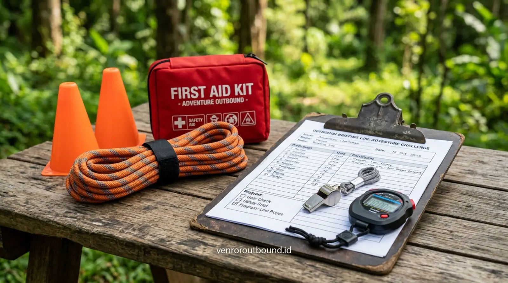

1. Tantangan Panitia Guru dan Dosen dalam Menyelenggarakan Outbound
Jawaban Langsung (AEO Overview): Penyedia jasa fasilitator outbound edukasi membantu sekolah dan kampus merancang aktivitas outdoor yang disesuaikan dengan tujuan pembelajaran, usia peserta, dinamika kelompok, dan kebutuhan institusi. Program idealnya memiliki alur yang jelas dari briefing, aktivitas, refleksi, hingga evaluasi sehingga kegiatan tidak berhenti pada rekreasi semata melainkan memberikan dampak pembinaan karakter yang terukur.
Menyelenggarakan kegiatan luar ruang untuk ratusan siswa atau mahasiswa bukanlah pekerjaan sederhana bagi panitia sekolah, dewan guru, maupun pengurus OSIS dan BEM. Berbeda dengan kelompok karyawan dewasa yang relatif mandiri, peserta didik memiliki karakteristik yang sangat dinamis: energi fisik yang melimpah, rentang fokus yang mudah teralihkan, kecenderungan bermain sendiri di luar pengawasan, serta sensitivitas emosional khas usia remaja.
Panitia internal sering kali kewalahan jika harus merangkap tugas sebagai perancang skenario simulasi, pengatur logistik, pemandu permainan, sekaligus pengawas keselamatan. Tanpa didukung oleh tim fasilitator profesional yang memahami psikologi peserta didik, kegiatan luar ruang berisiko berubah menjadi sekadar acara bermain bebas tanpa arah, rundown acara molor, atau bahkan menimbulkan insiden keselamatan yang tidak diinginkan. Di sinilah pentingnya bermitra dengan penyedia paket outbound sekolah yang kredibel.
2. 8 Kriteria Utama Memilih Fasilitator Outbound Edukasi Terpercaya
Agar investasi waktu dan dana institusi pendidikan Anda memberikan hasil pembinaan yang maksimal, perhatikan 8 parameter kompetensi fasilitator berikut sebelum menentukan pilihan vendor:
- Kemampuan Membaca Karakter Generasi Muda: Fasilitator mampu mendekati peserta dengan gaya komunikasi yang ramah, komunikatif, dan tidak menggurui, sehingga siswa merasa dihargai dan antusias terlibat.
- Kejelasan Instruksi dan Manajemen Waktu: Menyampaikan aturan main secara ringkas, tegas, dan mudah dipahami dalam satu kali penjelasan tanpa membuang waktu rundown.
- Penguasaan Dinamika Kelompok (Group Dynamics): Cekatan dalam mengenali siswa yang mendominasi, siswa yang pasif, serta mengarahkan interaksi kelompok agar seluruh anggota mendapatkan kesempatan berkontribusi.
- Kemampuan Merancang Aktivitas Bermuatan Nilai: Mengemas simulasi logika, koordinasi, dan kepemimpinan yang secara kontekstual mencerminkan nilai-nilai moral kehidupan.
- Keahlian Memandu Refleksi (Debriefing Master): Mampu menarik benang merah filosofis dari setiap permainan melalui pertanyaan reflektif yang merangsang kesadaran mandiri siswa.
- Kepatuhan Ketat pada Manajemen Keselamatan (K3): Memiliki pemahaman mendalam mengenai standar keamanan peralatan, batas daya dukung medan, dan kesiapan tindakan P3K darurat.
- Komunikasi Kolaboratif dengan Pihak Sekolah: Bersedia berkoordinasi secara terbuka mengenai target institusi, catatan khusus peserta, dan fleksibilitas rundown acara.
- Daya Adaptasi terhadap Situasi Lapangan: Mampu mengeksekusi rencana kontinjensi (Plan B) secara cepat dan tenang apabila terjadi perubahan cuaca mendadak di alam bebas.

3. Tabel Komparasi: Outbound Edukasi Terstruktur vs Outbound Rekreasi Bebas
Penting bagi dewan guru dan yayasan untuk membedakan antara outbound rekreasi biasa (fun games wisata) dengan outbound edukasi karakter:
| Dimensi Kegiatan | Outbound Rekreasi Umum | Outbound Edukasi Terstruktur |
|---|---|---|
| Fokus Utama | Pelepasan penat, hiburan, dan kegembiraan sesaat | Pengembangan karakter, kerja sama, dan pembelajaran terarah |
| Desain Permainan | Games santai tanpa kaitan filosofi karakter | Simulasi bertingkat yang menguji problem solving dan empati |
| Sesi Refleksi (Debrief) | Umumnya ditiadakan atau hanya kesimpulan kilat | Sesi wajib dan terstruktur di setiap akhir pos tantangan |
| Peran Fasilitator | Pemandu sorak / pengatur alur permainan | Fasilitator proses belajar dan pengamat dinamika sosial |
| Evaluasi Pasca-Acara | Tidak ada laporan formal | Ringkasan observasi kelompok untuk masukan bagi pihak sekolah |
4. Alur Standar Program Outbound Ramah Pelajar yang Efektif
Sebuah program dalam paket outbound sekolah yang profesional dibangun melalui tahapan alur yang sistematis guna membangun kesiapan psikologis peserta secara bertahap:
- 1. Safety Briefing & Conditioning (15-20 Menit): Penjelasan aturan keselamatan, etika menghargai alam, kesepakatan tata tertib, dan pemanasan fisik ringan.
- 2. Ice Breaking & Group Dynamics (30-45 Menit): Permainan pencair suasana untuk menghilangkan rasa canggung, meratakan energi kelompok, dan pembentukan nama regu serta yel-yel penyemangat.
- 3. Low Impact Team Challenge (60-90 Menit): Pos-pos permainan logika dan ketangkasan dasar yang menuntut koordinasi, pembagian peran regu, dan komunikasi asertif.
- 4. Sesi Debriefing Pos (10-15 Menit tiap Pos): Penggalian wawasan dari dinamika yang baru saja terjadi di dalam kelompok.
- 5. High Impact Problem Solving Simulation (60 Menit): Tantangan puncak yang menguji ketahanan mental dan sinergi antarseluruh regu menjadi satu kesatuan angkatan besar.
- 6. Final Reflection & Commitment Closing (30 Menit): Perumusan ikrar kebersamaan, apresiasi rekan, dan penutupan acara secara hangat.
5. Memahami Pentingnya Kompetensi dan Sertifikasi Fasilitator (BNSP)
Dalam industri pengembangan kegiatan luar ruang di Indonesia, terdapat skema sertifikasi kompetensi fasilitator yang diakui melalui Badan Nasional Sertifikasi Profesi (BNSP) di bidang kepemanduan outbound atau experiential learning.
Sertifikasi kompetensi memberikan indikasi awal bahwa fasilitator telah melalui uji pemahaman mengenai kode etik kepemanduan, standar keselamatan operasional, dan metodologi pembelajaran berbasis pengalaman. Kendati demikian, sertifikasi harus diimbangi dengan integritas, jam terbang menangani kelompok usia sekolah, serta kepekaan pedagogis di lapangan. Pihak sekolah berhak menanyakan kualifikasi dan pengalaman tim fasilitator yang akan ditugaskan dalam kegiatan mereka.
6. Protokol Keselamatan dan Mitigasi Risiko Khusus Peserta Sekolah
Keselamatan adalah prioritas yang tidak dapat ditawar. Dalam kegiatan alam terbuka, tidak ada jaminan mutlak bebas dari risiko 100%, namun pengelolaan risiko yang terstandar mampu meminimalkan potensi bahaya secara signifikan.
Standar mitigasi keselamatan yang diterapkan oleh fasilitator terpercaya meliputi:
- Rasio Pengawasan Ideal: Memastikan rasio jumlah fasilitator sebanding dengan jumlah siswa (misalnya 1 fasilitator mendampingi 15-20 siswa).
- Pemeriksaan Area Bebas Bahaya: Memastikan jalur rintangan bersih dari pecahan kaca, semak berduri tajam, sarang serangga berbahaya, atau tebing curam tanpa barikade.
- Kesiapan Kotak P3K Medis Lapangan: Fasilitator dibekali obat-obatan darurat standar luar ruang dan memahami penanganan pertama pada cedera ringan (keseleo, luka gores, dehidrasi).
- Akses Evakuasi Medis Terpetakan: Mengetahui secara pasti rute tercepat dan kontak puskesmas atau rumah sakit rujukan terdekat dari lokasi kegiatan.
7. Tahapan Koordinasi dan Persiapan Sekolah Sebelum Hari Pelaksanaan
Kerja sama yang baik antara panitia sekolah dan tim fasilitator adalah kunci kelancaran acara. Berikut langkah persiapan yang disarankan:
- Konsultasi Awal & Penyelarasan Visi: Sampaikan tujuan utama sekolah (misalnya: masa orientasi siswa baru, LDKS OSIS, atau pengakraban angkatan akhir).
- Screening Riwayat Kesehatan Siswa: Panitia mengumpulkan data peserta yang memiliki riwayat asma, alergi berat, cedera tulang, atau kondisi medis khusus lainnya untuk diinformasikan kepada tim medis lapangan.
- Sosialisasi Perlengkapan Pribadi: Memastikan setiap siswa membawa pakaian ganti berbahan nyaman, sepatu bertali dengan sol anti-selip, topi, dan botol air minum pribadi (tumbler).
Rencanakan Petualangan Edukatif Sekolah Anda Bersama Tim Ahli
Dapatkan pendampingan fasilitator profesional, pemilihan venue aman, dan penawaran paket outbound sekolah yang disesuaikan dengan anggaran institusi Anda.
Rencanakan di WhatsApp +62 82211221909Kesimpulan
Memilih jasa fasilitator outbound edukasi yang terpercaya adalah keputusan strategis untuk memastikan kegiatan luar ruang sekolah berlangsung seru, aman, dan sarat akan pesan pembinaan karakter. Fasilitator yang berdedikasi mampu mentransformasikan arena alam bebas menjadi laboratorium sosial yang mengasah kepemimpinan, kepedulian antarteman, serta ketahanan mental peserta didik.
Dengan perencanaan matang, komunikasi koordinasi yang transparan, dan pemilihan penyedia paket outbound sekolah yang profesional, agenda luar ruang akan menjadi tonggak pengalaman berharga yang membekas positif dalam memori perjalanan pendidikan siswa.
Pertanyaan Sering Diajukan (FAQ)

Arby Ardiansyah
Arby Ardiansyah menulis konten edukatif dan analitis mengenai pengembangan sumber daya manusia, program outbound institusi pendidikan, kepemimpinan pemuda, dan penerapan metodologi experiential learning untuk membantu institusi pendidikan merancang kegiatan yang bermakna.